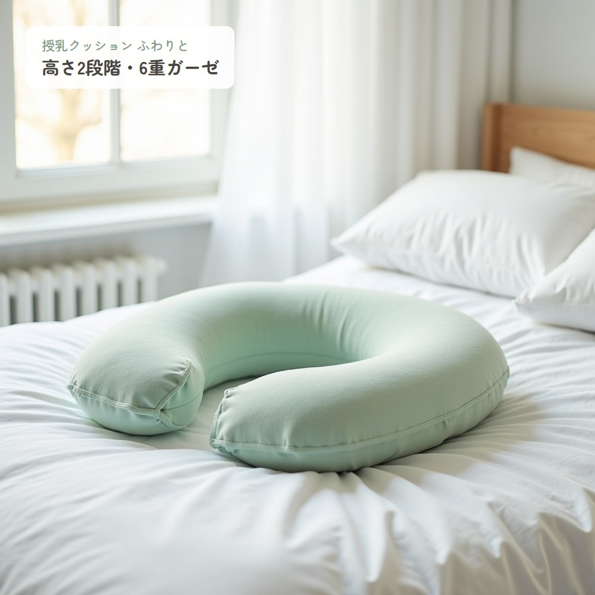
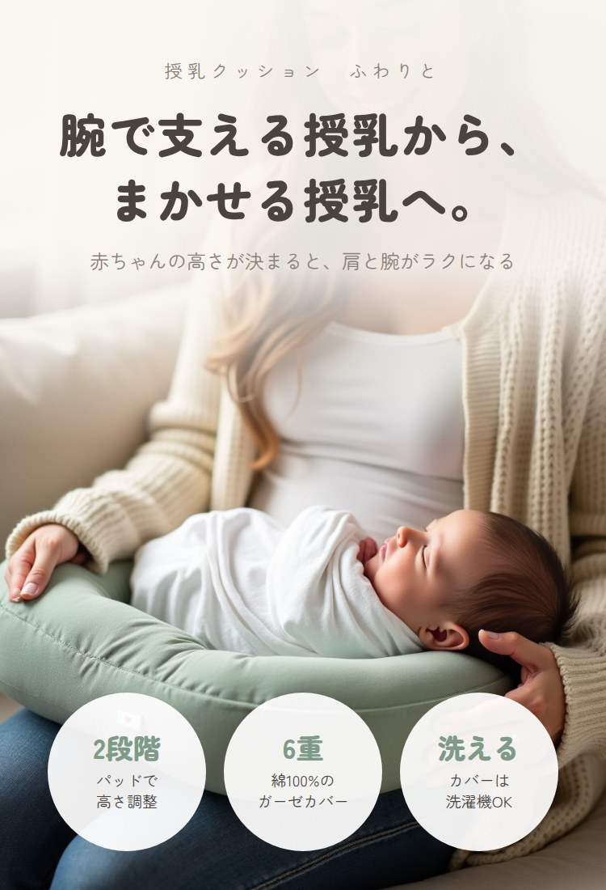
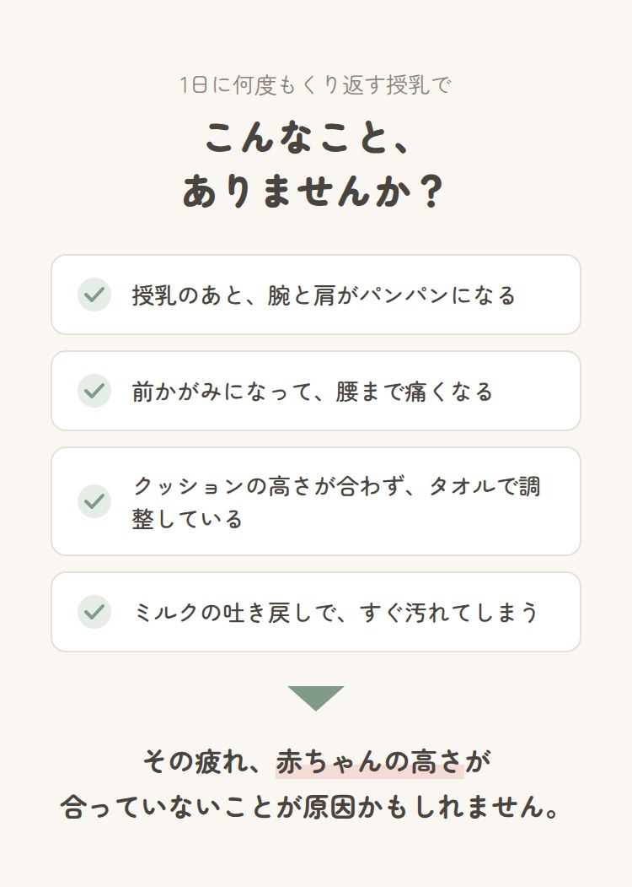
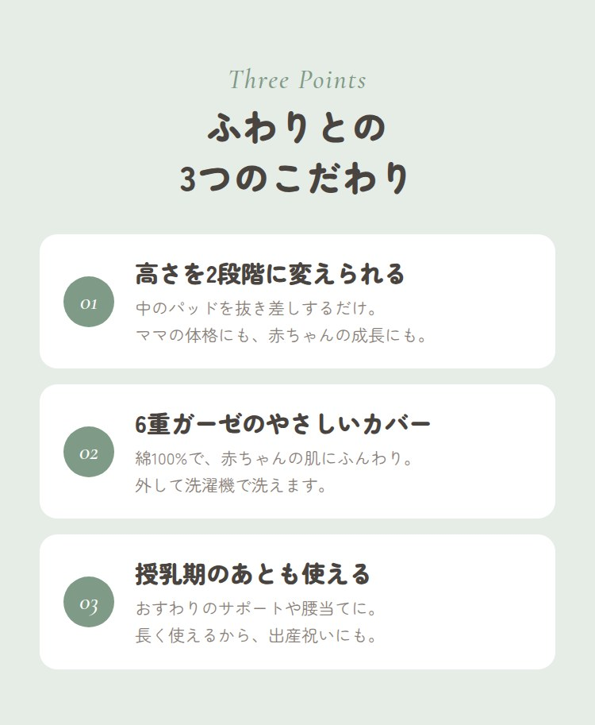
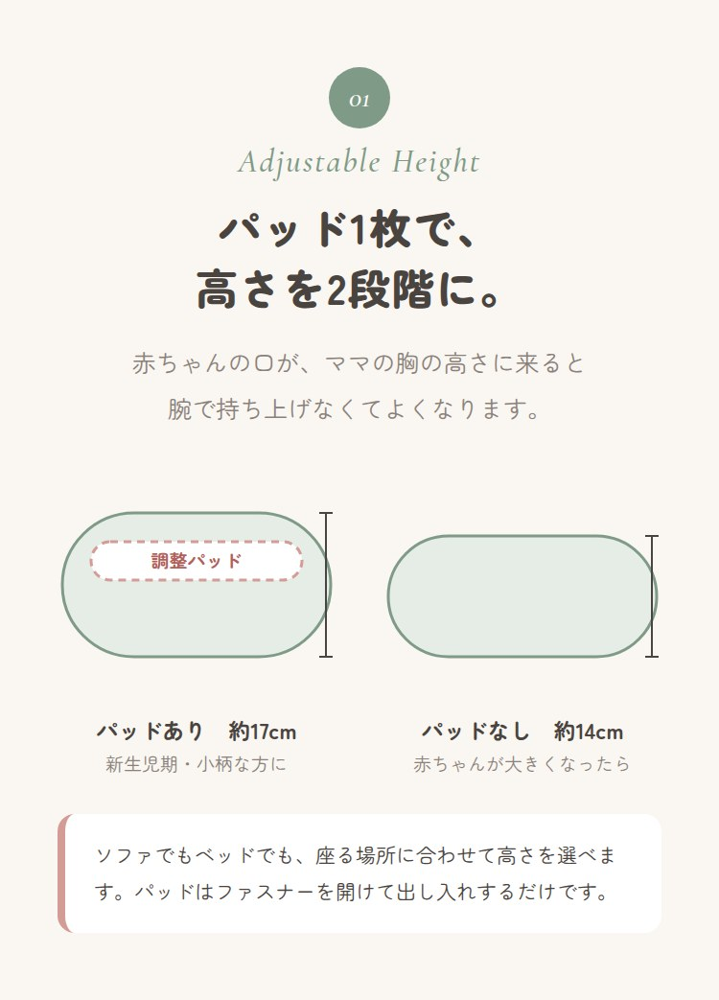
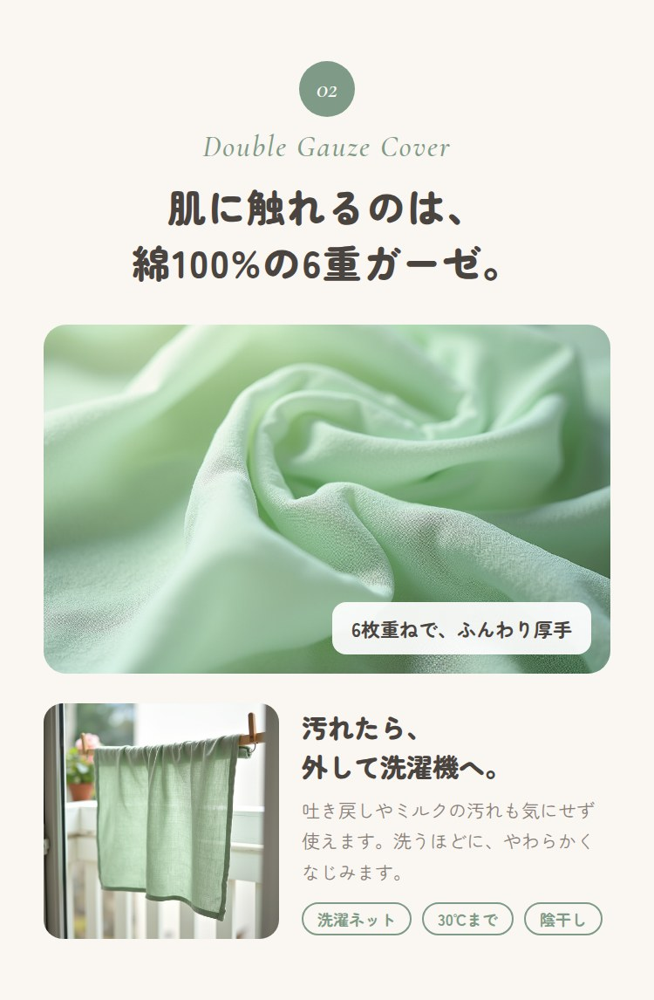
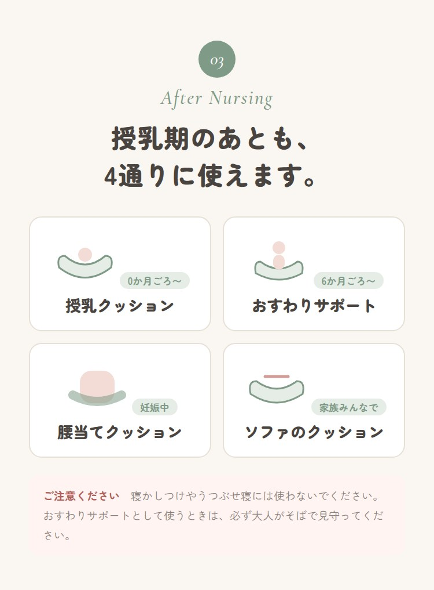
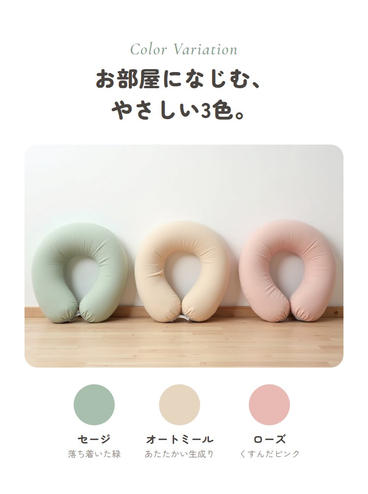
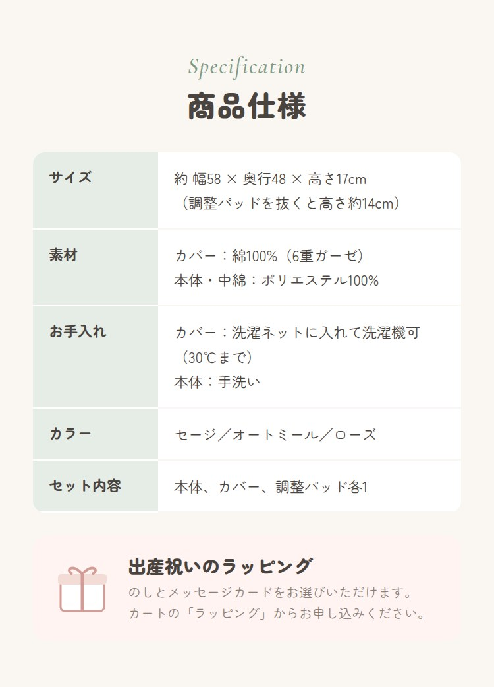

第1商品画像
検索結果で最初に目に入る画像です。楽天の第1商品画像のガイドライン（文字は20%以内、枠線なし、背景は写真か白）に合わせ、文字は左上の小さな札1つにしました。
文字が少ない分、写真で「やわらかそう」「部屋になじむ色」が伝わるよう、白いベッドと窓の光で撮る想定にしています。

腕で支える授乳から、まかせる授乳へ。
商品名より先に、使ったあとの変化を言葉にしました。授乳クッションを探す人は、すでに腕や肩のつらさを感じているので、そこに直接答えるコピーにしています。
下の3つの丸で、比較されやすい点（高さ、素材、洗えるか）を最初の1枚で見せ、スクロールしなくても違いがわかるようにしました。

お悩みの共感
機能の説明に入る前に、読む人が「自分のことだ」と思えるよう、授乳中に起こりやすい場面を4つ並べました。
最後に「原因は高さかもしれない」と気づきを置くことで、次の高さ調整の話を自然に読み進めてもらえる流れにしています。

3つのこだわり
楽天の商品ページは途中で離れる人が多いので、詳しい説明の前に強みを3つにまとめて先に見せました。ここだけ見て決める人にも伝わるようにしています。

高さを2段階に
一番の強みなので、言葉より図で見せました。パッドがある場合とない場合を横に並べ、数字で高さの差がわかるようにしています。
「誰に向いているか」を図の下に添え、自分がどちらを使うかを想像できるようにしました。

6重ガーゼと洗えるカバー
素材は写真の質感が一番伝わるので、生地のアップを大きく使いました。
赤ちゃん用品は「汚れたらどうするか」を必ず気にされるため、洗濯の写真と洗濯表示の要点を同じ画像に入れています。

授乳期のあとも使える
「授乳期だけで使わなくなるのでは」という迷いに答えるため、使える時期を月齢つきで並べました。出産祝いを選ぶ家族にも、長く使えることが贈る理由になります。
ベビー用品なので、寝かしつけに使わないことと見守りが必要なことを、同じ画像の中に必ず入れています。

カラー
3色を並べた写真と、色の名前と短い説明をセットにしました。画面では色が少し違って見えることがあるので、言葉でも色味を補っています。

仕様とラッピング
サイズ・素材・お手入れは、最後に表でまとめて確認できるようにしました。
ページの一番下は、カートに入れる直前に見る場所なので、出産祝いのラッピングの案内を置き、贈り物として買う人の最後の一押しにしています。